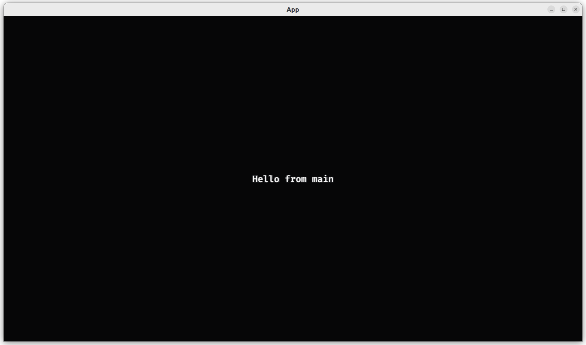
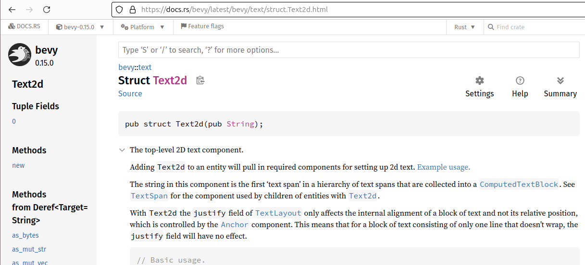
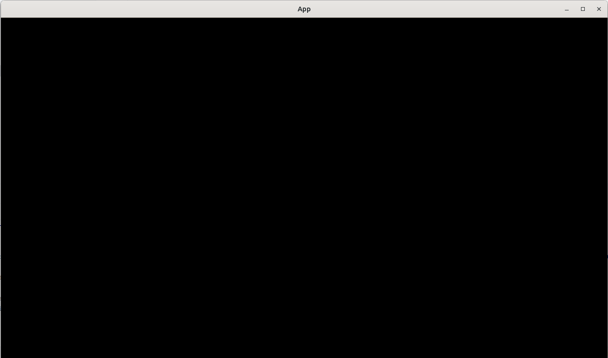

2.6. Add text¶
This chapter shows how to add a text to a game.

This chapter introduces:
- Working with Rust
Strings - The Bevy
Text2d - Using
app.update()in the wrong place causing problems
2.6.1.  First test: an
First test: an App has no text¶
Similar to earlier chapters, we'll start our game development for counting the number of texts to be zero:
Like in earlier chapters, we already make App mutable,
as querying requires the App to be so.
2.6.2.  First fix¶
First fix¶

Part of the Bevy
Text2ddocumentation
Taking a look at
the Bevy Text2d documentation,
one can see that there is a field called text of data type Text.
We'll use that -and only that- for our query:
fn count_n_texts(app: &mut App) -> usize {
let mut query = app.world_mut().query::<&Text2d>();
return query.iter(app.world()).len();
}
This query is probably (and indeed is!) good enough,
as it will not conflict with the Bevy entities that are added
by the default plugins. This was different from when we were querying
for a player's Transform, as a default camera also has a Transform
Component, hence we had to use a Player marker component to get access
to the right Transform.
2.6.3. Second test: can create an App with text¶
As our game will show a text, we'll have to be able to pass our
desired text to it. We do so using a create_app function:
The String used by Bevy is the standard Rust String.
We could just as well have picked to use a string slice instead, as it would have made our test look cleaner:
When trying out if the string slice resulted in cleaner
code over using a String, the answer turned out to be no:
due to the string slice lifespans it was needed to create Strings
for them.
One could argue that the cleanest looking test should be chosen
and, hence, the string slice. However, having a String construction
in a test is reasonable enough and because it resulted in a cleaner
implementation, using a String was chosen.
2.6.4. Second fix¶
All that this test forces us to do, is to write a create_app
function that accepts a String. Here is an example stub
that will pass the test:
2.6.5. Third test: an App has text¶
Now we force our game to actually store the text in an entity:
fn test_app_has_text() {
let mut app = create_app(String::from("irrelevant"));
app.update();
assert_eq!(count_n_texts(&mut app), 1);
}
Where the previous chapter
needed to have app.update() to prevent a panic,
here we have a different reason:
would we add app.update() in the create_app function,
our text will not be shown in a regular run:

This game when
app.update()is added tocreate_app: no text is visible
The reason is, again, that calling app.update() finalizes the App's
currents state. When then, in the main function, the default plugins
are added, something happens to the already initialized text
making it not appear.
2.6.6. Third fix¶
To make this test pass, we need to:
- Write
create_appto pass on theStringto aadd_textfunction - Write an
add_textfunction to add a component with thatString
The create_app is quite similar to versions is earlier chapters:
pub fn create_app(text: String) -> App {
let mut app = App::new();
let add_text_fn = move |commands: Commands| add_text(commands, &text);
app.add_systems(Startup, add_text_fn);
app
}
Also in this incarnation of create_app, we use a closure to be able
to fit our add_text function in the app.add_systems member function.
The add_text function may look like this:
Most of this function is similar to adding a Sprite.
It may come as a surprise that the text field is more than just
a String: a Text contains multiple TextSections,
of which each TextSection can have its own text and style.
2.6.7. Fourth test: an App has the correct text¶
In the final test we assure that our desired text is actually stored by our application:
fn test_app_uses_text() {
let text = String::from("some random text");
let mut app = create_app(text.clone());
app.update();
assert_eq!(get_text(&mut app), text);
}
In this test, our text string needs to be cloned
and the Rust compiler will remind us of that.
2.6.8. Fourth fix¶
If your implementations matched the earlier fixes, this test would already pass. In case you've cut a corner, this is the test that will force you to write a non-stub implementation.
2.6.9. main.rs¶
The resulting main function is not much different than we are used to:
fn main() {
let text = String::from("Hello from main");
let mut app = create_app(text);
let add_camera_fn = |mut commands: Commands| {
commands.spawn(Camera2d);
};
app.add_systems(Startup, add_camera_fn);
app.add_plugins(DefaultPlugins);
app.run();
}
2.6.10. Conclusion¶
We can now create an App with a text.
We have tested everything that the App does!
Full code can be found at https://github.com/richelbilderbeek/bevy_tdd_book_add_text.